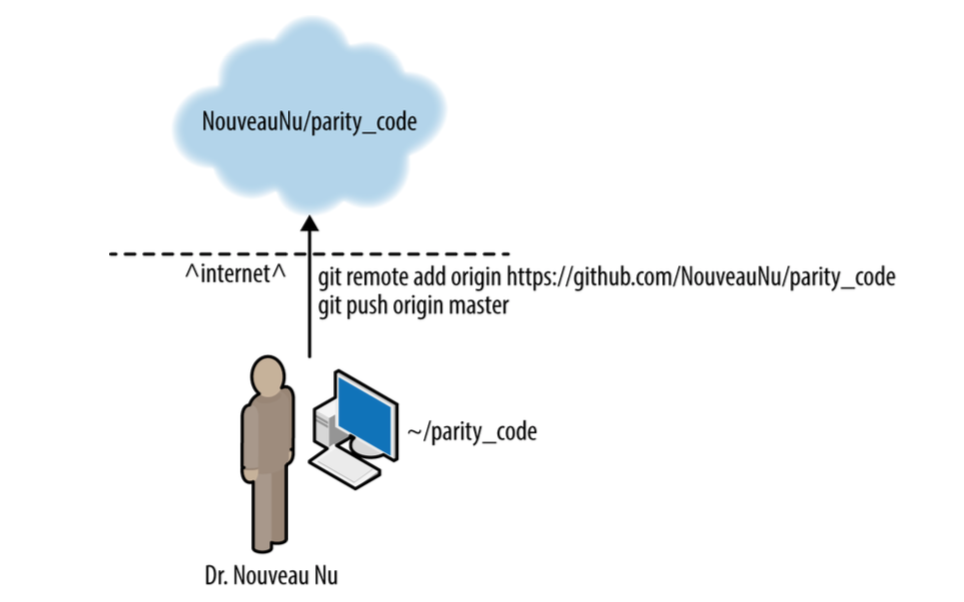

Repositories
We'll focus on GitHub

Create and push new repo
Cloning a repo

Cloning a repo
$ git clone https://github.com/SoftwareDevEngResearch/analysis_code.git
$ git clone git@github.com:SoftwareDevEngResearch/analysis_code.git
Course Resources
- Syllabus: softwaredevengresearch.github.io/syllabus/
- GitHub organization: github.com/SoftwareDevEngResearch
- Other resources: softwaredevengresearch.github.io/syllabus/#resources
- Gitter chat room: https://gitter.im/SoftwareDevEngResearch/Lobby
Textbook

Chapters 1–6 should be review
Project
Most of your work in the class will be centered around a project developing a new software package for your research.
Rest of today: version control
What for?
- Back up changing files
- Store and access an annotated history
- Manage merging of changes between different change sets
Why important?

Saving copies

important_code.py
important_code-2.py
important_code-fix.py
important_code-final.py
important_code-final-4apr.py
Git commits
important_code.py
important_code.py
important_code.py
important_code.py
important_code.py
Git

Git is a knife whose handle is also a knife. – Philip Guo

Getting Started with Git
$ git --help
$ git config --global user.name "Kyle Niemeyer"
$ git config --global user.email "kyle.niemeyer@oregonstate.edu"
$ git config --global core.editor "vim"
~ $ mkdir analysis_code
~ $ cd analysis_code
~/analysis_code $ git init
Initialized empty Git repository in ~/analysis_code/.git/
~/analysis_code $ ls
~/analysis_code $ ls -A
.git
~/analysis_code $ cd .git && ls -A
HEAD config description hooks index info logs objects packed-refs refs
Try this yourself.
Adding files
~/analysis_code $ touch README.md
~/analysis_code $ git add README.md
~/analysis_code $ git status
Try this yourself.
Committing changes
Snapshot of repository = revision
Committing a revision:
- Saves current state with a unique ID (hash)
- Names you as author
- Allows you to add a message
~/analysis_code $ git commit
Try this yourself.
Options to save time:
~/analysis_code $ git commit -m "This is my message"
~/analysis_code $ git commit -am "This is my message
committing all changes"
Commit messages:
Bad commit message:
Fixed bug
Good commit message:
Fixed bug in mass calculation
Due to incorrect density value, mass was being calculated
orders of magnitude larger than it should. The correct value
of density fixed this problem.

Viewing the history and differences
~/analysis_code $ git log
~/analysis_code $ git diff
Undoing work
Un-add a file:
~/analysis_code $ git reset new-file.txt
Reset repository to previous commit:
~/analysis_code $ git reset [mode] [commit]
Remove uncommitted changes:
~/analysis_code $ git checkout -- README.md
Branches
~/analysis_code $ git branch
* master
~/analysis_code $ git branch experimental
~/analysis_code $ git branch
experimental
* master
~/analysis_code $ git branch new
~/analysis_code $ git branch -d new
~/analysis_code $ git checkout experimental
~/analysis_code $ git branch
* experimental
master
Merging Branches
~/analysis_code $ git checkout master
~/analysis_code $ git merge experimental
~/analysis_code $ git log
Next time: remote version control (GitHub)
Assignment for next week: project proposal